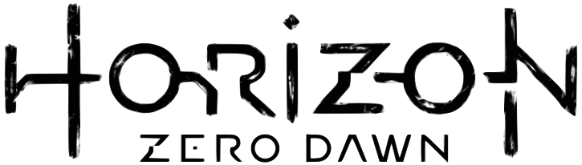
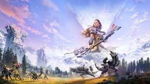
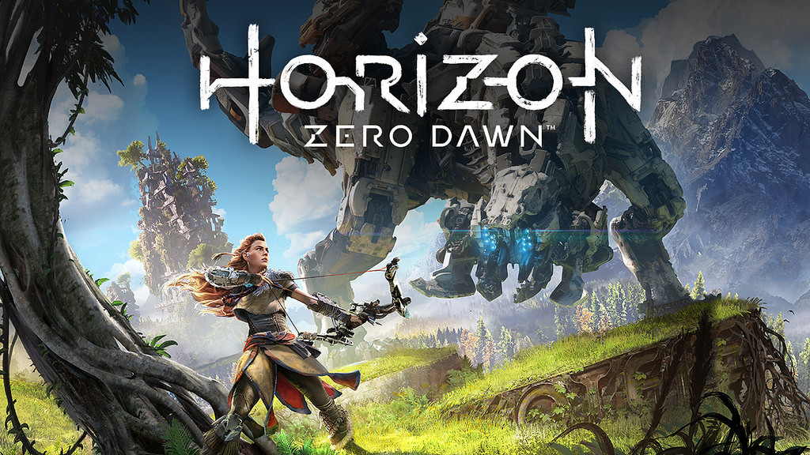
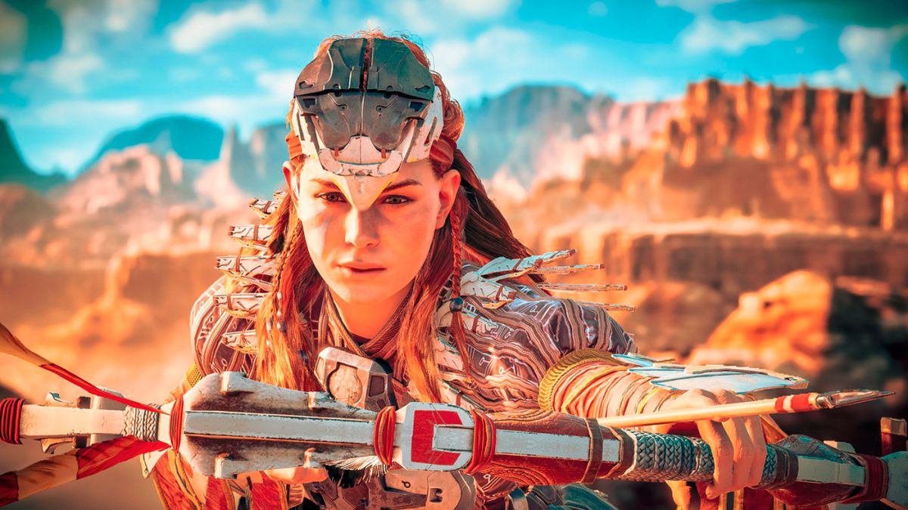
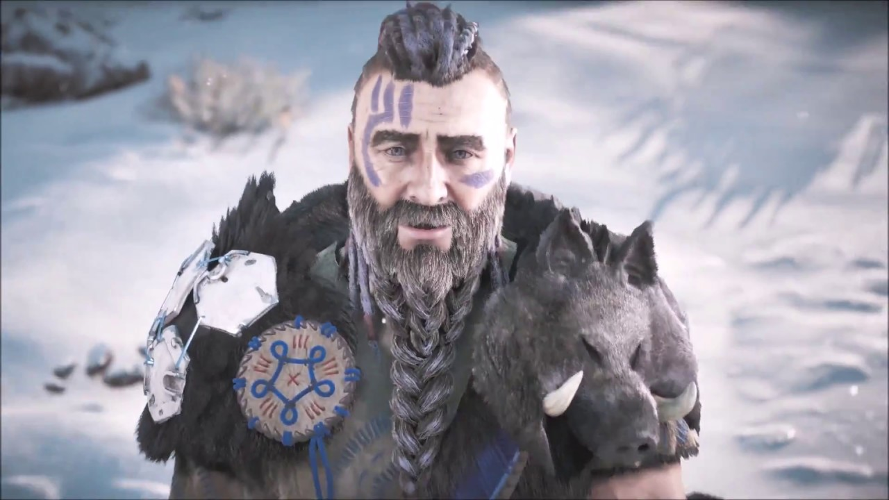
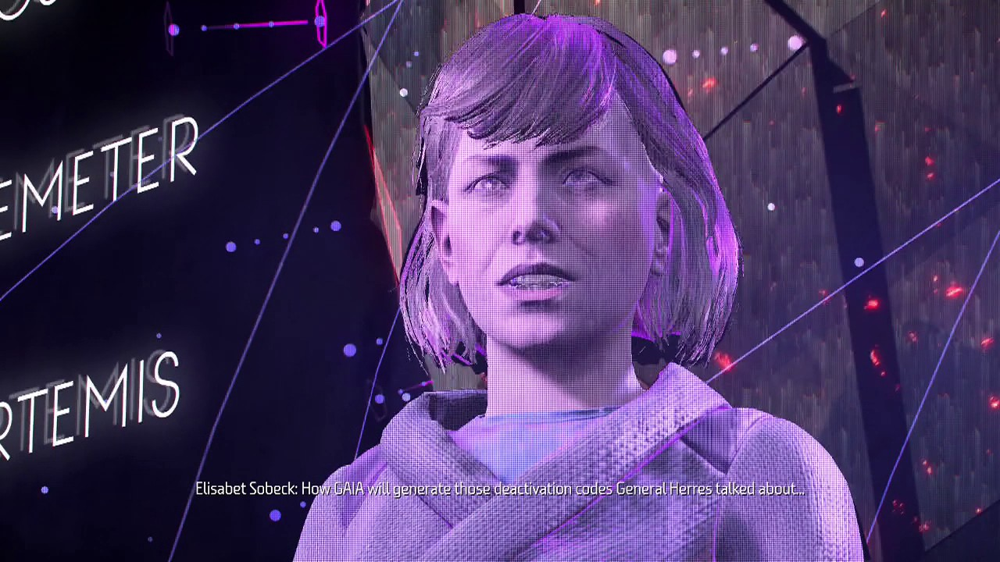
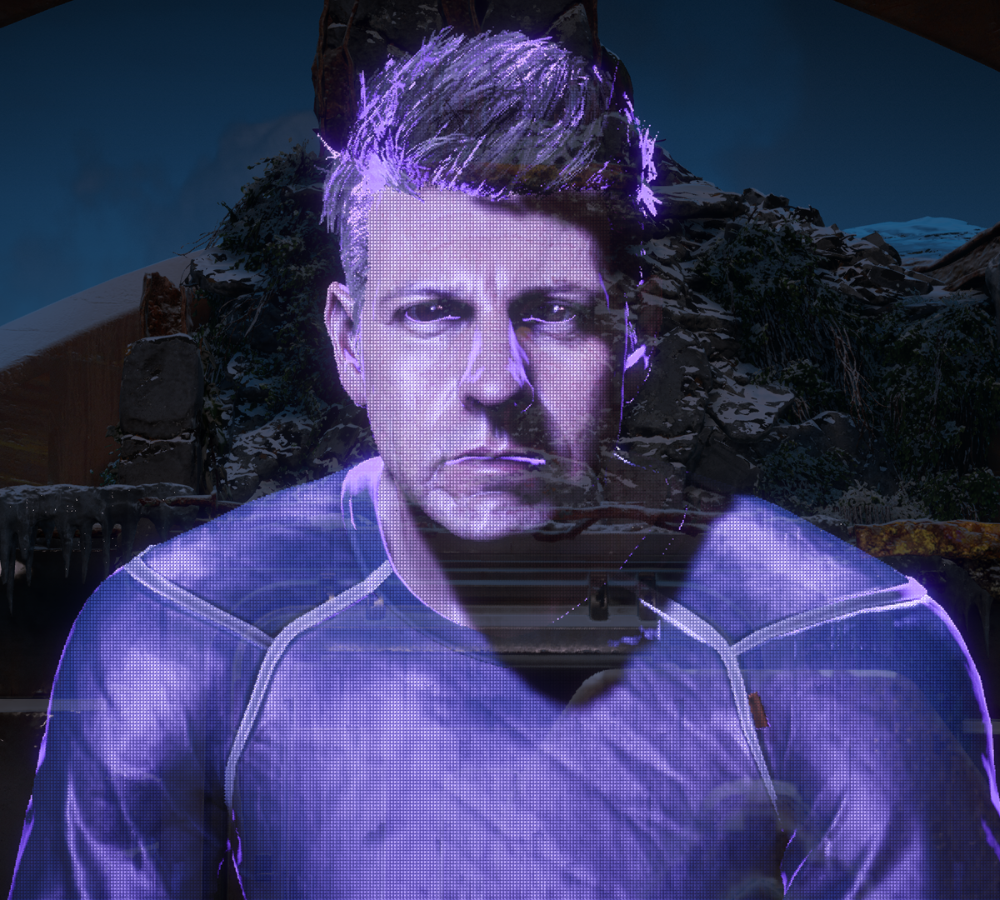

¿Qué es "Horizon Zero Dawn" como franquicia de videojuegos?
Horizon Zero Dawn es un videojuego de acción, aventura y de mundo abierto desarrollado por Guerrilla Games y distribuido por Sony Interactive Entertainment para PlayStation 4. Es la primera propiedad intelectual de Guerrilla Games desde la serie Killzone en 2004 y se anunció por primera vez en el E3 2015.1 El juego está protagonizado por Aloy, una guerrera de la tribu de los Nora y está ambientado en un futuro post-apocalíptico donde las máquinas son la raza dominante de la Tierra
Horizon Zero Dawn se convirtió en el mejor debut de una nueva IP en PlayStation 4, marca que consiguió tras superar al videojuego No Man's Sky.3 Además, el videojuego recibió críticas excelentes por su historia, su ambientación, aspectos visuales, el mundo abierto, el personaje de Aloy y el trabajo de la actriz Ashly Burch interpretando al personaje. También es considerado uno de los mejores videojuegos de 2017 y uno de los videojuegos más vendidos de PlayStation 4.

¿Cómo es su jugabilidad?
Horizon Zero Dawn es un videojuego de rol con elementos de acción y aventura en tercera persona. El juego se ambienta en un mundo post-apocalíptico donde reina la naturaleza, las zonas rurales, zonas montañosas y los bosques. Cuenta con un ciclo diurno y nocturno, además de un sistema meteorológico dinámico.

Entregas principales de la saga
En esta lista solo se incluye el juego anterior, debido a que es una saga en pañales:

Personajes principales de la saga
- Aloy: Es la protagonista de Horizon Zero Dawn. Es una joven cazadora de máquinas, una excelente arquera y miembro de la tribu de los Nora. Es una mujer valiente que intenta demostrarle a la tribu lo que vale. Durante su búsqueda, Aloy quiere saber por qué es una marginada y de donde proviene. Fue creada con el ADN de Elisabet Sobeck. Es decidida y muy curiosa. Además, es compasiva y compresiva con los demás. Incluso tiende a ser sarcástica con las personas que no le agradan. A diferencia de los miembros de la tribu, que consideran prohibido el uso de la tecnología, Aloy lo ve como una herramienta útil y ventajosa para comprender el mundo antiguo. Es muy escéptica en lo que se refiere a las leyes, tradiciones y creencias tribales de los Nora. Aunque fue creada con el ADN de Elisabet Sobeck, Aloy se siente conectada paternalmente a ella, a tal grado, que la admira y la respeta por su valentía y optimismo.

- Rost: Es el padre adoptivo de Aloy. Antes miembro de la tribu Nora, ahora es un marginado pero extremadamente fiel a las leyes y las tradiciones de los Nora. Cuando Aloy nació, las Matriarcas le encargaron su cuidado. Es un hombre muy sabio y un excelente maestro para Aloy. Su hija adoptiva es lo más importante para él. Al final, sacrifica su vida para salvarla de una muerte segura. Antes del nacimiento de Aloy, Rost tuvo una esposa y una hija de seis años, las cuales fueron asesinadas por unos forasteros. Para vengarse, Rost le pidió secretamente a las Matriarcas que lo nombraran Buscador de la Muertenota 9 para poder salir de la Tierra Sagrada y encontrarlos. Lleno de venganza, Rost encuentra a todos los forasteros y los asesina. Al volver a la Tierra Sagrada, las Matriarcas le permitieron quedarse en el territorio de la tribu como un marginado a cambio de que no le mencionara a nadie lo que había hecho.

- Elisabet Sobeck: Era la madre biológica de Aloy y una de las figuras más importantes del proyecto Zero Dawn. Era una mujer decidida, brillante, compasiva, desinteresada y talentosa en el área de la robótica, la ciencia y la ingeniería. Años antes de la catástrofe, fue contratada por Ted Faro para el diseño y desarrollo de tecnología ambiental. Como resultado, Elisabet fue ganando reconocimiento e importancia en la comunidad científica. Sin embargo, su negativa al desarrollo de tecnología militar la llevó a romper relaciones con Ted Faro y su empresa. Elisabet se volvió independiente y creó su propia empresa de tecnología ambiental. Cuando Faro y su empresa perdieron el control de su tecnología militar, acudieron a Elisabet para que resolviera el problema. Pero la extinción de la vida en la Tierra era inminente así que Elisabet sugirió crear un proyecto que permitiera devolver a la Tierra a su estado original. El proyecto recibió el nombre Zero Dawn. Como directora del proyecto, Elisabet se dedicó profundamente al desarrollo de Zero Dawn junto con otros científicos. Amaba tanto a la Tierra y a la humanidad que estuvo dispuesta a dar su vida para salvar ambas cosas. Murió tratando de evitar que el enjambre de máquinas de Faro destruyera la instalación donde se desarrollaba el proyecto.

- Ted Faro: Fue el fundador, presidente y propietario de la corporación Faro Automated Solutions y una figura importante en el proyecto Zero Dawn. Años antes de la catástrofe, era un empresario reconocido en todo el mundo. Sin embargo, su avaricia e imprudencia lo llevaron a concebir tecnología militar avanzada que causó la extinción de toda la vida en la Tierra. Para remediar el daño, solicitó la ayuda de la doctora Sobeck pero el resultado de sus acciones era inevitable. La creación de Faro, conocida como la "Plaga de Faro" acabó con toda forma de vida en la Tierra y la volvió inhabitable. Solo el proyecto Zero Dawn podía devolver al planeta a su estado original. Durante su estadía en la instalación donde se desarrollaba el proyecto, Faro acosaba constantemente a Sobeck y a los científicos por obtener resultados sobre los avances del proyecto tratando de aportar nuevas ideas. Después de la muerte de Elisabet, Faro perdió por completo el juicio, borró los archivos que se transmitirían a las futuras generaciones y asesinó a los científicos Alfas para evitar que lo reconstruyeran. Debido a sus acciones, la humanidad creció en ignorancia y sin conocimiento sobre el mundo antiguo.

Página oficial de "Horizon Zero Dawn Forbidden West"
Página Playstation (Horizon Zero Dawn Forbbiden West)
Regresar a la página principal